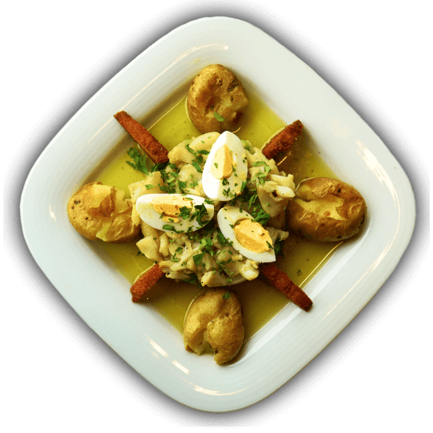

Restaurante
Menu
Praxis em tua casa
7 de abril a 25 de abril - de quarta a domingo

Takeaway
EncomendarDe Quarta a Domingo (almoço e jantar).
Até às 10h e 17h do próprio dia para almoço e jantar, respetivamente.
Entregas numa distância de 5km.
Ligue para o 239 440 207 para fazer a sua encomenda.

Restaurante Praxis
O Restaurante Praxis integra a Fábrica e Museu da Cerveja de Coimbra. Apresentamos uma gastronomia variada, com as melhores carnes, o melhor pescado e uma seleção com mariscos de qualidade. Aqui, na Praxis, encontra os melhores conceitos dos petiscos cervejeiros.
SERVING TASTY BITES SINCE 2006
Restaurante Praxis
Servimos os nossos clientes com produtos da melhor qualidade e primamos pelo cumprimento das regras e normas da confeção alimentar. Temos uma equipa que procura sempre satisfazer quem nos visita de forma profissional, humana e simpática.
Nós, a Praxis, convidamos todos a fazerem uma visita ao restaurante, às instalações de Produção (onde se faz a nossa cerveja Praxis), e à nossa decoração com a história da Cerveja de Coimbra.
Galeria
Feast your eyes